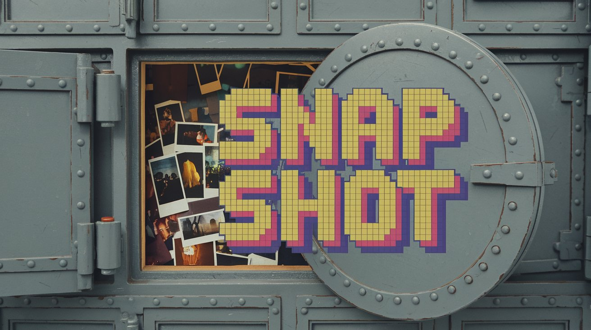
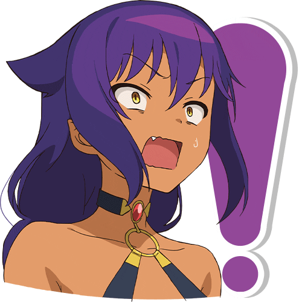
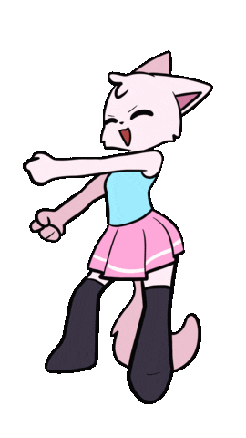

cssclasses:
- cards
- dashboard
dg-home: true
dg-publish: true Start Here
Start Here

Welcome to My Digital Vault 

You've stumbled into my Personal Knowledge Management Vault, a space where I collect and refine my thoughts, ideas, and notes.
 This is my little space on the web. A place where I openly share what I'm exploring, consuming, and creating. It’s all about learning in public and connecting the dots as I go.
This is my little space on the web. A place where I openly share what I'm exploring, consuming, and creating. It’s all about learning in public and connecting the dots as I go.
 Consider everything here a perpetual work in progress. Most notes are far from perfect, always evolving. Only a few have reached a level of completeness.
Consider everything here a perpetual work in progress. Most notes are far from perfect, always evolving. Only a few have reached a level of completeness.
 Curious about more? Check out my YouTube channel for additional insights and content.
Curious about more? Check out my YouTube channel for additional insights and content.
Latest Video

Navigating My Vault 
The sidebar holds the key to exploring the site. It’s not the final design, but for now, it’s one of the best ways to dive in.
 Got something specific in mind? Use the search bar or simply hit CTRL + K to find what you’re looking for.
Got something specific in mind? Use the search bar or simply hit CTRL + K to find what you’re looking for.
 Each page features a graph view that shows how it links to other notes, helping you see connections at a glance.
Each page features a graph view that shows how it links to other notes, helping you see connections at a glance.
 Hover over internal links to preview the content without having to click—just like on Wikipedia.
Hover over internal links to preview the content without having to click—just like on Wikipedia.
 Many notes are still in the works. If you find one that’s not yet published, it means I’m actively refining it.
Many notes are still in the works. If you find one that’s not yet published, it means I’m actively refining it.
 Tags are your friend! Click on them to explore related content.
Tags are your friend! Click on them to explore related content.
 For some lighter reading, check out -
For some lighter reading, check out -
Books
| File3 | Cover | Author | Pages | Rating |
|---|---|---|---|---|
| How to Take Smart Notes (2017) |
|
| 182 | 4 |
| Dopamine Nation (2021) |
| Dr. Anna Lembke | 304 | 5 |
| Show Your Work! (2014) |  |
| 224 | 3.78 |


See more Books I've Read (WIP)
Anime
| File3 | Cover | Status | Date Watched | Genres | English Titles | Rating |
|---|---|---|---|---|---|---|
| Tensei shitara Slime Datta Ken 3rd Season - Kanwa - Diablo Nikki (2024) |  |  watching watching | September 10, 2024 |
| That Time I Got Reincarnated as a Slime Season 3: Digression - Diablo's Journal |
|
| Isekai Suicide Squad (2024) |  |  dropped dropped | July 11, 2024 |
| Suicide Squad Isekai |  7.2 7.2 |
| Tokidoki Bosotto Russia-go de Dereru Tonari no Alya-san (2024) |  | watching | July 11, 2024 |
| Alya Sometimes Hides Her Feelings in Russian | |
See all the anime I've watched in 2024
Movies
| File3 | Cover | Plot | Date Watched | Rating | Genres | Actors |
|---|---|---|---|---|---|---|
| The Fall Guy (2024) |  | A down-and-out stuntman must find the missing star of his ex-girlfriend's blockbuster film. | June 26, 2024 | 8.2 |
|
|
| Youjo Senki Movie (2019) |  | With its armies sweeping across the continent, the Empire seems unstoppable. After securing victory over the remnants of the Republic's... | June 20, 2024 | 8.2 |
| - |
| Godzilla Minus One (2023) |  | Post-war Japan is at its lowest point when a new crisis emerges in the form of a giant monster, baptized... | June 29, 2024 | 8 |
|
|
... And some movies I've watched in 2024
Manga
| File3 | Cover | Plot | Author | Genres | Rating | Status |
|---|---|---|---|---|---|---|
| Biomega (2004) |  | SSet in the future, the plot follows Zouichi Kanoe and his AI companion Fuyu Kanoe, whose luminous form is integrated... | - Nihei, Tsutomu |
| 7.48 | Finished |
| MF Ghost (2017) |  | By the 2020s, cars with internal combustion engines have largely been phased out, replaced by self-driving electric and fuel cell... | - Shigeno, Shuuichi |
| 7.37 | Publishing |
| Origin (2016) |  | Tokyo, 2048. Japan is now connected to the entire northern hemisphere by the Eurasian Railroad, and all manner of crime... | - Boichi |
| 7.62 | Finished |
More at Manga Dashboard
 KawaiiDoro
KawaiiDoro
 The Untold Backstory I know it’s a bit chaotic here. I’m working to make sense of it all. When I started this, I never planned to publish my notes online, so they’re not as interconnected as they should be. I’m publishing directly from my Obsidian vault, which brings some limitations in how the UI appears.
The Untold Backstory I know it’s a bit chaotic here. I’m working to make sense of it all. When I started this, I never planned to publish my notes online, so they’re not as interconnected as they should be. I’m publishing directly from my Obsidian vault, which brings some limitations in how the UI appears.